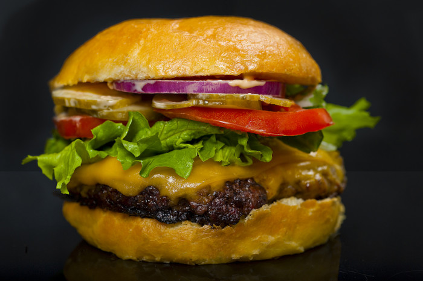

Cheeseburger

Ingredienten
- 600 g rundergehakt van de uitgebeende platte bil zonder vet
- 120 g bacon
- 4 broodjes
- 200 g cheddar
- 1 rode ui, geschild en in plakjes
Bereiding
- Verdeel het gehakt in ballen van 150 g en vorm er hamburgers van. Bak ze in een koekenpan met wat vet op hoog vuur bruin of doe dat onder de grill; verhit ze 2 minuten per kant (ze zijn dan nog tamelijk rauw) maar laat ze niet verbranden. Bestrooi ze met zout en peper. Bak de bacon op hoog vuur 1 minuut per kant. Het moet knapperig worden maar mag niet verbranden.
- Terwijl je het vlees verhit, leg je de broodjes met de snijkant omhoog 1 minuut midden in de oven onder de grill. Ze moeten goudbruin worden. Snijd de kaas in plakjes en leg ze in een aardewerk schaaltje op laag vuur. Wacht tot de kaas zacht en heet is.
- Verdeel de zelfgekozen saus over de bovenste helften van de broodjes. Leg de hete hamburgers steeds op de onderste helft en voorzie ze van kaas, plakjes ui en bacon. Klap de broodjes dicht en zet ze meteen op tafel.